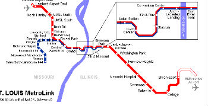

Getting around St.Louis and Campus
There is a lot to around St.Louis and on campus. When trying to do things in the city there are many options for getting around. One of the best ways to get around is by taking the metro link or by taking the buses. Since students have free passes to the metro it is the cheapest way to get around. Another way to get around is by siginig up for car share so that you can drive yourself around. Yet another option is by calling a cab. If you are trying to get around campus you can either walk, or ride a bike, or take the circulator. There is plenty to do in St.louis such as exploring forest and traveling around the city. To learn more about the metro link click on the link below.
What To Do in St.Louis
A few things to do in St.Louis
What To Do in Wash U
There is alot to do on and around campus as well